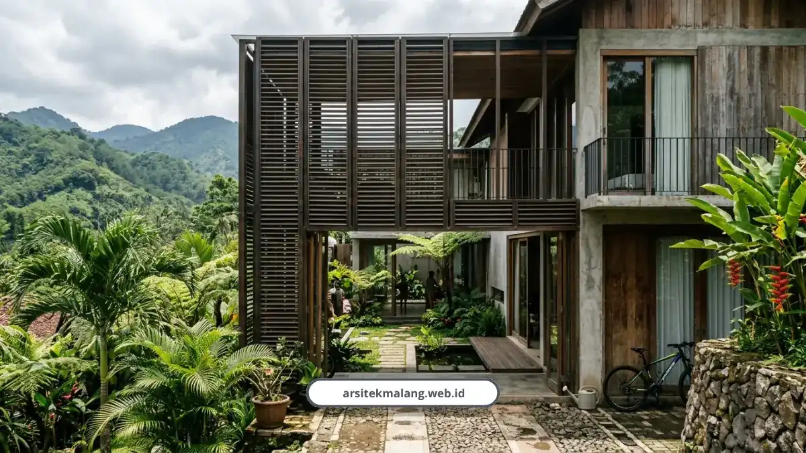

Ringkasan Inti
- Portofolio arsitek Malang kami mencakup 150+ proyek residensial dan komersial dengan tingkat kepuasan klien mencapai 98 persen.
- Dikerjakan kolaborasi tim ahli multidisiplin dipimpin Arsitek Principal & Lead Structural Estimator berpengalaman 10+ tahun.
- Penerapan strategi passive cooling terbukti memangkas tagihan listrik AC sebesar 60–80 persen atau hemat Rp600.000–Rp1.000.000/bulan.
- Koleksi proyek meliputi hunian tropis hook, villa kontur Batu, industrial minimalis Araya, hingga ruko dan fine dining.
- Tarif perencanaan arsitektur hemat energi berkisar Rp70.000–Rp150.000/m² dengan pilihan paket gambar 3D, DED komplit, hingga kontraktor turnkey.
Daftar Isi Artikel
Portofolio arsitek Malang kami mencakup 150+ proyek residensial dan komersial di Malang Raya, dari rumah tropis modern yang adem tanpa AC sampai ruko tiga lantai. Semua desain memadukan estetika minimalis dengan solusi iklim tropis yang sejuk dan tahan hujan deras.
Saya paling suka bagian ini karena di sinilah semua klaim bisa dibuktikan lewat karya nyata, bukan sekadar janji di brosur. Tim kami sudah menyelesaikan lebih dari 150 proyek di Malang Raya dengan tingkat kepuasan klien 98 persen.
Bukan cuma rumah tinggal, portofolio kami juga mencakup villa, ruko, kantor, sampai restoran fine dining.
Siapa yang Mengerjakan Desain di Balik Portofolio Ini?
Setiap proyek dalam portofolio kami dikerjakan oleh tim ahli dengan spesialisasi berbeda-beda supaya hasil akhirnya benar-benar solid dari sisi estetika maupun struktur. Ini bukan kerja satu orang, tapi kolaborasi tim lintas keahlian:
- Muhammad Musyaffa, Arsitek Principal dan Lead Structural Estimator, berpengalaman 10+ tahun di Malang Raya, spesialis desain tropis modern dan RAB presisi
- Elias Vance, Kepala Arsitek, desainer visioner berpengalaman 20+ tahun
- Sarah Chen, Manajer Proyek, menjamin eksekusi tepat waktu sesuai blueprint
- Marcus Thorne, Kepala Rekayasa dan Struktur, menjamin integritas dan keamanan struktur bangunan
Kalau Anda penasaran seperti apa alur kerja tim ini dari konsultasi pertama sampai desain final, kami sudah jelaskan detail di artikel konsultasi arsitek Malang bersama tim kami supaya Anda tahu persis tahapannya.

Apa Ciri Khas Desain Rumah Tropis Modern yang Kami Buat?
Ciri khasnya adalah rumah yang sejuk secara alami tanpa terus-menerus mengandalkan AC, dicapai lewat strategi ventilasi dan orientasi bangunan yang tepat. Ini bukan sekadar gaya visual, tapi solusi fungsional untuk iklim Malang yang lembab dan curah hujannya tinggi.
Beberapa strategi passive cooling yang kami terapkan:
- Ventilasi silang dengan jendela di dua sisi dinding berseberangan
- Efek cerobong hawa lewat void tangga vertikal setinggi 3,6-4 meter dan skylight berjalusi
- Orientasi bangunan menghadap utara-selatan untuk menghindari radiasi matahari terik
- Atap teritisan lebar dengan kemiringan 30-35 derajat dan overstek 1,2-1,5 meter
- Inner courtyard dan secondary skin kisi-kisi yang menyaring 50-70 persen panas matahari sore
Strategi pasif ini terbukti mengurangi tagihan listrik AC hingga 60-80 persen, atau menghemat Rp600.000 sampai Rp1.000.000 per bulan, sekaligus menghemat modal awal pembelian unit AC sebesar Rp15-20 juta.
Muhammad Musyaffa menjelaskan bahwa alokasi biaya jasa arsitek untuk perencanaan desain pasif terbukti menjadi investasi cerdas yang memotong tagihan listrik AC hingga 60-80 persen seumur hidup bangunan.
Menurutnya, pemanfaatan efek cerobong hawa via void tangga vertikal dan skylight berjalusi membuat udara panas terbuang otomatis, sehingga investasi jasa arsitek akan kembali modal hanya dalam kurun 2-3 tahun pertama masa huni.
Untuk material, kami memakai kayu tahan cuaca seperti bengkirai, merbau, atau ulin pada fasad, dikombinasikan dengan beton ekspos, bata terakota lokal, batu candi hitam khas Jawa Timur, dan travertine.
Catatan Arsitek Malang
Saat mengeksplorasi portofolio desain arsitektur, jangan hanya terpaku pada keindahan tampak visual luar. Perhatikan kecerdasan zonasi denah dan bukaan udara dalam menyikapi iklim setempat. Desain hunian tropis yang matang akan menciptakan sirkulasi sejuk alami sepanjang tahun tanpa ketergantungan konstan pada energi listrik pendingin udara.
Proyek Apa Saja yang Ada di Portofolio Kami?
Portofolio kami mencakup proyek residensial, villa, hingga bangunan komersial yang tersebar di berbagai titik Malang Raya. Berikut beberapa yang bisa jadi gambaran gaya kerja kami:
Proyek residensial dan villa:
- Residensi Dharmawangsa di Batu, hunian eksekutif berlatar alam
- Cluster Permata Batu, klaster hunian eksklusif bergaya tropis modern
- Villa Lembang, villa tropis premium berbahan material alam
- Desain Rumah Tropis Modern Sukun, solusi hunian adem pasif tanpa AC
- Portofolio Industrial Minimalis Araya Malang, dengan fasad beton ekspos dan tata ruang open plan
- Rumah Tropis Hook karya arsitek IAI Malang A. Indra Permana dan A. Bima Satya, dengan luas lahan 1.090 meter persegi dan luas bangunan 580 meter persegi, dilengkapi menara pengawas, inner courtyard, kolam renang, dan kolam koi pendingin udara
Proyek komersial:
- Menara Sinergi Nusantara di Malang
- Ruko Kota Baru Malang, kompleks ruko modern tiga lantai
- Restoran Lantern di Malang, dengan interior fine dining elegan
Probo Hindarto, penulis buku 25 Karya Arsitek IAI Malang, menyebut bahwa perpaduan konsep tropis dan modern terlihat dari penggunaan bentuk geometris, permainan garis tegas, warna netral, serta penambahan kisi-kisi secondary skin yang memberikan efek bayangan alami sekaligus memperkuat nilai estetika bangunan.
Berapa Kisaran Biaya untuk Desain Serupa Portofolio Ini?
Tarif perencanaan arsitektur tropis hemat energi di Malang Raya berkisar Rp70.000 hingga Rp150.000 per meter persegi luas bangunan, sudah mencakup konsep denah, gambar 3D, DED komplit, dan RAB. Untuk paket dasar, kisarannya mulai dari Rp25.000 sampai Rp50.000 per meter persegi, atau bisa juga memakai skema 5-8 persen dari total RAB.
Kami menyediakan beberapa opsi paket layanan sesuai kebutuhan Anda:
- Paket Jasa Arsitek 3D/Pasif: mencakup denah 2D, DED komplit, simulasi udara pasif, dan render 3D 4K
- Paket Kontraktor Bangun Rumah Turnkey: dari pondasi sampai serah terima kunci dengan RAB mengikat dan garansi struktur
- Paket Renovasi dan Tambah Lantai: untuk modernisasi fasad dan perkuatan struktur
- Paket Desain Interior Custom: untuk bespoke furniture dan penataan ruang
Bagaimana Klien Menilai Hasil Karya Kami?
Testimoni langsung dari klien jadi bukti paling jujur soal kualitas kerja kami di lapangan:
"Desain interior yang kami buat elegan dan fungsional, tata ruang terasa lebih luas dan setiap detail diperhatikan, sampai saya sangat merekomendasikan ke rekan-rekan pengusaha lainnya."
— Sari Dewi, Direktur CV Nusantara"Hasil desain rumah sangat memuaskan karena tim arsitek responsif dan pembangunan selesai tepat waktu sesuai jadwal yang disepakati."
— Budi Santoso, Pemilik Rumah di Malang"Renovasi rumah lama keluarga kami jadi tampak seperti bangunan baru, dan bahkan setelah tiga tahun kualitas fisiknya tetap terjaga prima."
— Maya Sari dari BatuKalau Anda ingin melihat langsung layanan mana yang paling cocok untuk mewujudkan rumah impian dengan gaya seperti di portofolio ini, silakan cek paket layanan lengkap kami di sini untuk mulai konsultasi gratis.
Portofolio ini bukan cuma pajangan galeri, tapi bukti bahwa desain tropis modern yang adem dan hemat energi memang bisa diwujudkan di iklim Malang yang lembab. Setiap proyek punya cerita dan tantangan lahan berbeda, tapi prinsip dasarnya tetap sama.
Kalau rumah, villa, atau tempat usaha impian Anda mirip dengan salah satu contoh di atas, tim kami siap membantu mewujudkannya dari konsep sampai serah terima kunci.
FAQ Seputar Portofolio Arsitek Malang
Apakah Desain Tropis Modern Cocok untuk Lahan Sempit di Perkotaan?
Cocok. Prinsip ventilasi silang dan efek cerobong hawa tetap bisa diterapkan pada lahan sempit lewat void vertikal dan bukaan strategis, seperti yang terlihat pada beberapa proyek minimalis industrial di portofolio kami.
Berapa Lama Waktu yang Dibutuhkan untuk Melihat Contoh Portofolio Lengkap?
Anda bisa langsung meminta contoh portofolio lengkap saat sesi konsultasi gratis pertama, baik lewat WhatsApp maupun tatap muka, tanpa perlu menunggu proses administratif yang lama.
Apakah Semua Proyek di Portofolio Menggunakan Material Lokal?
Sebagian besar proyek kami memang mengutamakan material lokal tahan cuaca seperti kayu bengkirai, batu candi hitam khas Jawa Timur, dan bata terakota lokal, karena lebih sesuai dengan karakter iklim Malang.
Wujudkan Desain Rumah Impian Anda
Diskusikan kebutuhan konsep rumah tropis modern, simulasi passive cooling, dan estimasi RAB bersama tim arsitek profesional kami.

Naura Regyna Putri
Penulis & Tim Riset Arsitektur Maroon Arsitek Malang, spesialis kurasi portofolio arsitektur, strategi desain pasif ramah iklim, dan estimasi konstruksi.